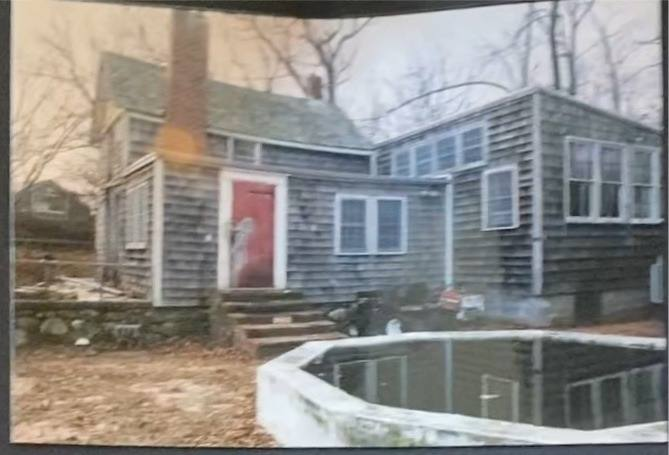
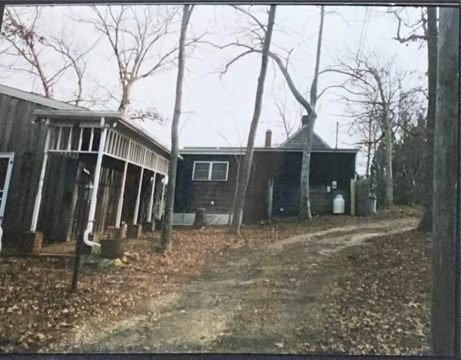
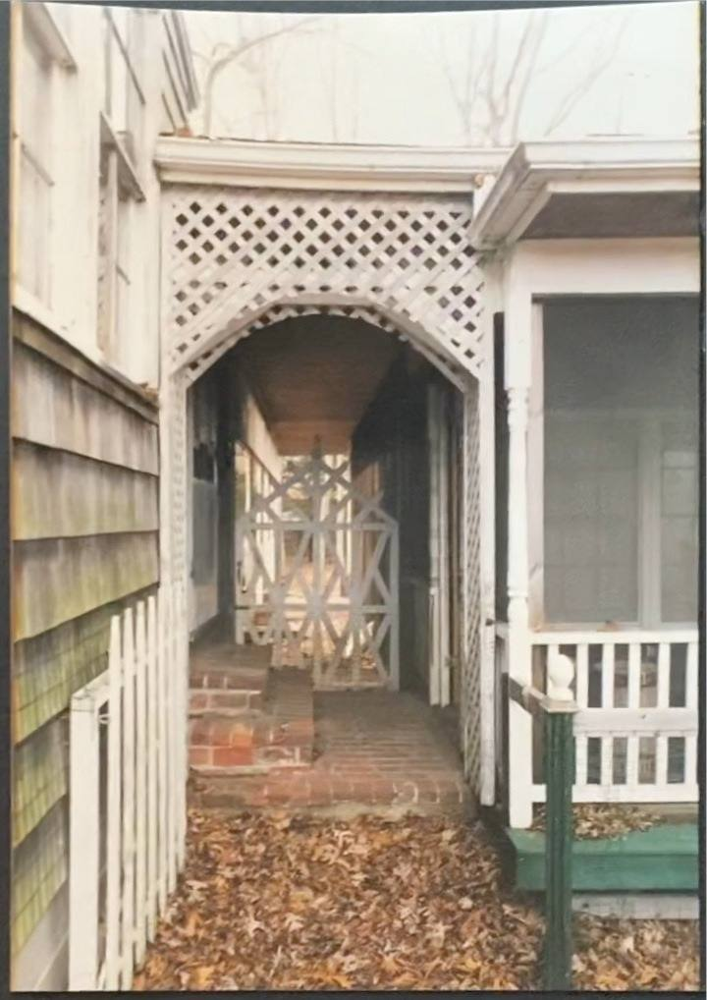
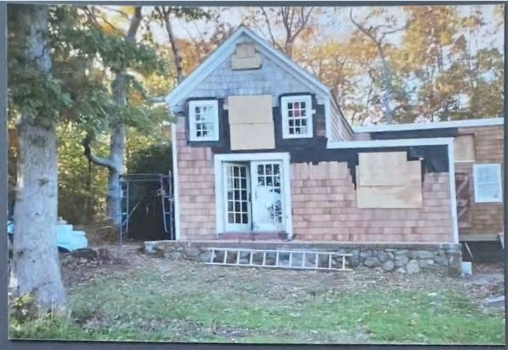
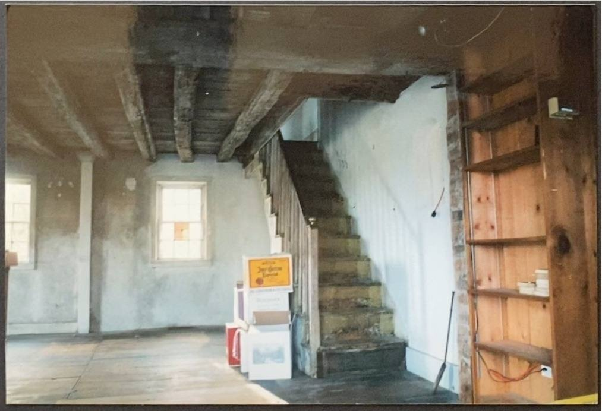
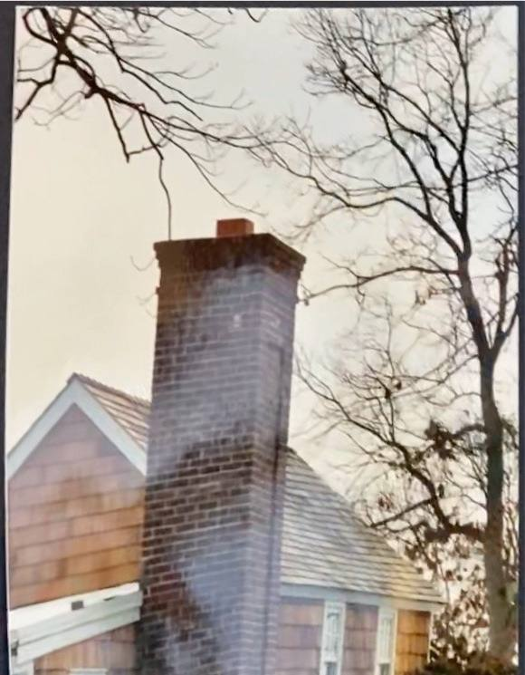
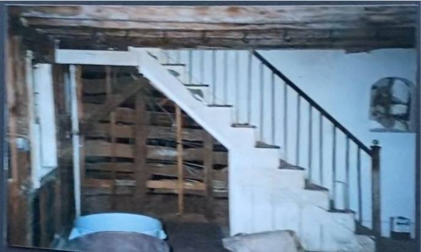
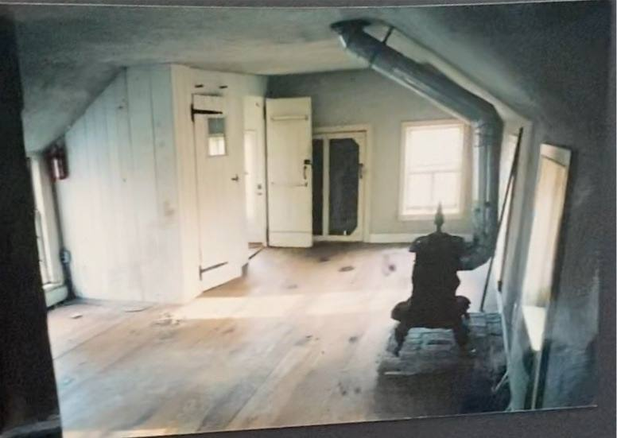
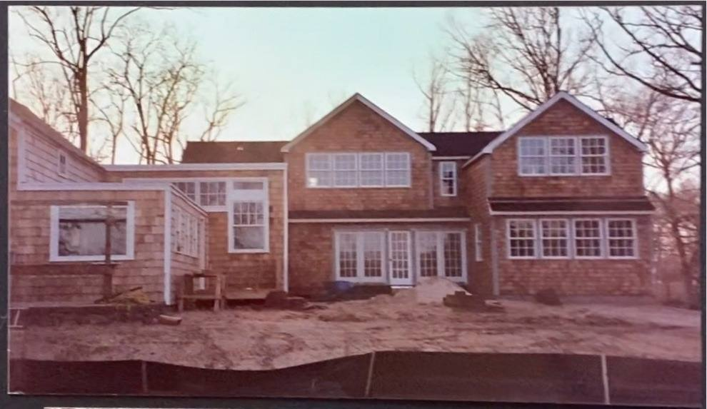
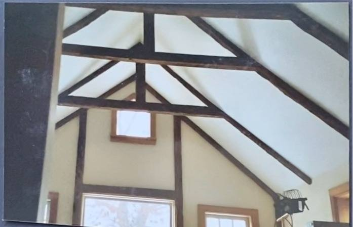

836 Springs Fireplace Road
Three renovations, one barn
Read from a survey, a photograph album, and a set of finished-house pictures — what the property was, what the renovation before this one did to it, and what is still standing from each.
A compound, not a house
before the previous renovation
Four separate buildings, strung roughly west to east across the lot. Furthest west, the volume that is now the front entrance, with the garage and its long screened range beside it. Then the building that became the great room. Furthest east, closest to the water, the timber-framed barn — already fitted out for living, with a red door, a boxed stair up to a loft and whitewashed plaster between hand-hewn beams. An in-ground pool sat against the barn’s north side, and a brick breezeway under a lattice arch ran between two of the others. Everything grey, everything weathered.



The renovation before this one
2003 or later
A gut, and a joining-up. Floors came out to the joists, walls back to the hand-hewn frame, windows out. New concrete-block foundations went in on the wetland side, a second floor was framed, a tall brick chimney was built, and the whole thing was re-shingled. The four separate buildings were pulled together into the single footprint the survey now draws. The date comes from a Marvin ‘Integrity’ window sticker propped against the brickwork in one frame — that line launched in 2003, and it is the only hard date anywhere in the album.






This renovation
photographed by Tim Williams
The barn survived a second time and became the kitchen — the hand-hewn frame reworked as painted trusses with steel tie rods threaded through, and the internal wall and stair taken out to open it up. The brick chimney stayed and the fireplace was whitewashed. The garage became the media room, mud room and laundry. The evening deck went in at the front entrance, and the pool ground became bluestone terrace.



What survived what
Traced element by element across the two renovations. Where the evidence runs out, the row says so.
| Element | Previous renovation | This one | Evidence |
|---|---|---|---|
| The barn | Kept, gutted | Kept, opened up | The oldest thing on the property and the only structure to survive both renovations. It was already living space before either — whitewashed plaster between hand-hewn beams, a boxed stair to a loft. This renovation took out that wall and stair; the kitchen stands where the stair was. |
| The barn’s roof trusses | Dark-stained, exposed | Painted, steel rods added | The clearest then-and-now pair in the album: same truss geometry, same small square gable window. The timbers were dark; they were painted out and the steel tie rods threaded through. |
| The red door | The barn’s door, behind a glazed porch | Gone | It appears in four frames and is the easiest thing to track the barn by. Nothing in the current photographs shows it. |
| The great-room building | A separate building east of the entrance | The great room | In the earliest frame it stands to the right of the barn as its own structure. It is the room with the whitewashed brick fireplace today. |
| The garage | A long range under a screened porch | Media room, mud room, laundry | Separate from everything else, with a brick breezeway under a lattice arch running to its neighbour. |
| The buildings themselves | Separate | One footprint | Four of them, running west to east: front entrance, garage range, great room, barn. The album shows them standing apart with a dirt drive between; then a covered breezeway linking two; the 2021 survey draws a single merged outline. Separate, then linked, then merged. |
| The brick chimney | Built new | Kept, fireplace whitewashed | Not original — it goes up during the previous renovation. It is the chimney beside the entry porch today, and the firebox it serves faces south toward the Pollock-Krasner house. |
| The in-ground pool | In use | Under the terrace | It sits right against the barn in the earliest frames and again behind the new foundation wall. The bluestone terrace covers that ground now, and the pool never appears on the 2021 survey. |
| Wide-plank floors, cast-iron firebox | Salvaged | Unclear | Both were photographed as kept pieces, the firebox stored in the barn mid-job. Whether either is in the house now is not visible in the Tim Williams set. |
What would sharpen this
- Which building is which. The album shows a barn, a dwelling and a shed range as separate things; the 2021 survey shows one merged footprint. Walking the plan on site would pin each down.
- When the previous renovation happened. Film prints, cordless tools and the trucks in frame read late 1990s to mid 2000s, but nothing in the album is dated. A permit or CO would fix it.
- The pool. It is in the early photographs and gone from the current ones, and it is not on the 2021 survey at all.
- The salvage. Wide-plank floors and a carved cast-iron firebox were photographed as kept pieces. Whether either is in the house now is not something the photographs answer.